Министерство образования Иркутской области · Сиб. отделение РАН · Региональная конференция «Наука. Технологии. Интеллект»
Выполнила: Косова Лада Петровна, ученица 11 «Д», МАОУ «Ангарский лицей №1». Руководитель: Косов Пётр Борисович.
Цель: создать открытый и воспроизводимый конвейер для анализа текста и генерации визуальных пособий для крупных произведений.
Задачи:
Проект можно разрабатывать и запускать в лёгком окружении (Termux на Android) или на ПК. Ключевые инструменты, использованные в процессе:
(Подсказка: проект фиксирует параметры прогона в run_metadata.json — это делает результаты воспроизводимыми между машинами.)
Пайплайн формирует готовые для визуализации таблицы/JSON:
Frontend — статический Vite‑сайт, который загружает готовые CSV/JSON из site/public/data/. Это даёт простую и надёжную публикацию без отдельного API.
Преимущества: лёгкий развёртывание, reproducible artifacts, простота отката и тестирования.
В разработке использовался агент PI в роли помощника по коду. Ключевые наблюдения:
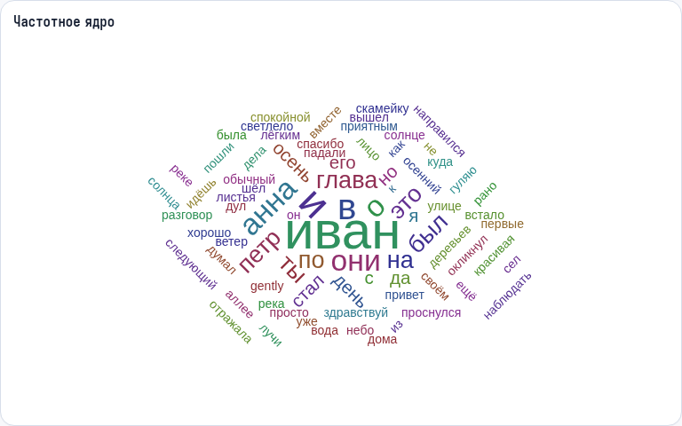
График показывает распределение частот токенов после очистки и фильтрации стоп‑слов. Помогает быстро увидеть доминирующие слова и общую лексику произведения.
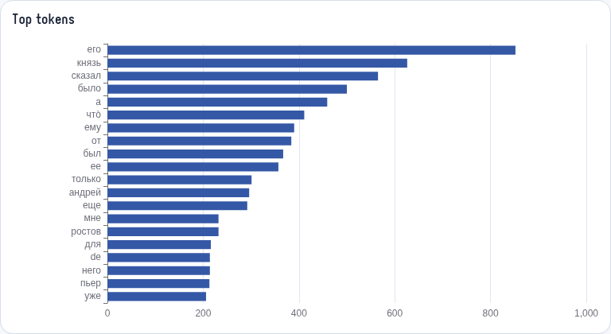
Барчарт с топ‑словами по частоте. Используется для быстрой инспекции ключевых лексем и проверки корректности нормализации/лемматизации.
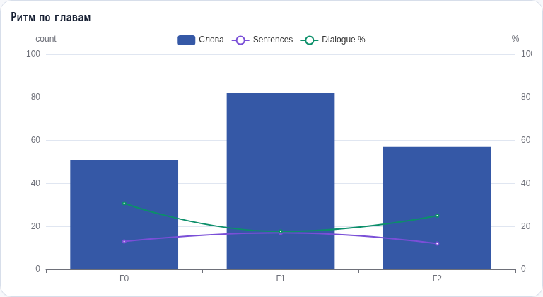
Таймлайн/диаграмма, показывающая плотность событий/текстовую активность по главам — помогает находить пики динамики и структурные особенности.
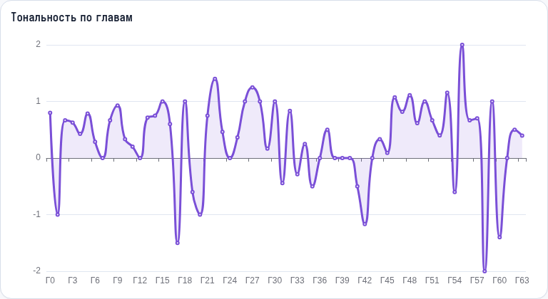
Линейный график тональности (лексикон‑based). Оценка приближённая, но полезна для выявления эмоциональных смен в тексте.
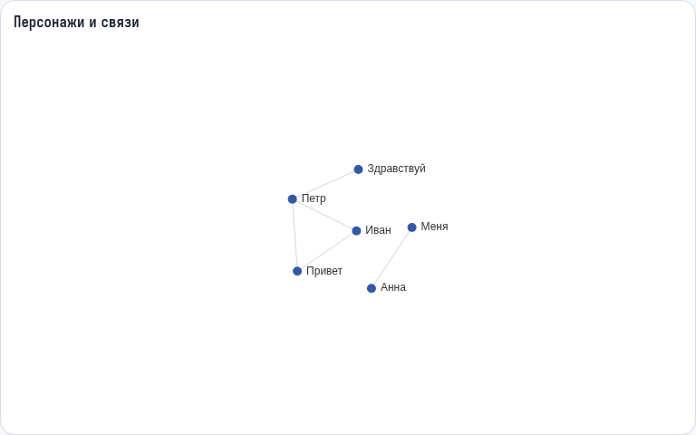
Граф ко‑встречаемости персонажей: ребра — совместные появления в окне контекста, вес — частота. Позволяет визуально выделить центральных и второстепенных персонажей.
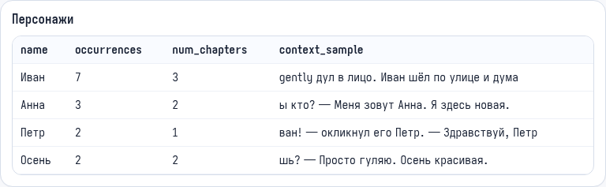
Таблица обнаруженных персонажей и их частоты. Нерегулярности в именах — следствие эвристического NER; требует дополнительной ручной валидации.
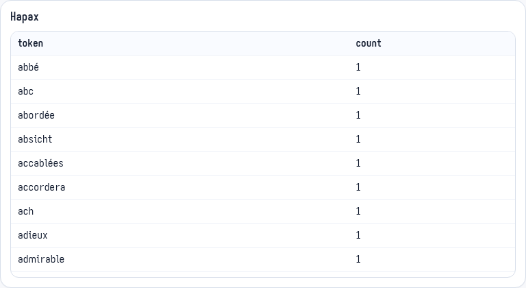
Список слов, встречающихся единожды. Полезно для изучения уникальной лексики и артефактов разметки.
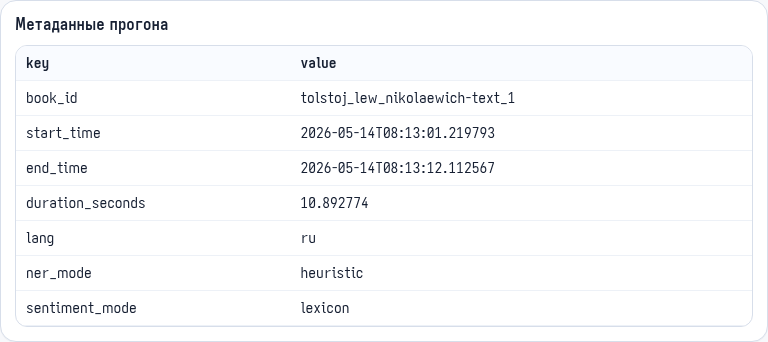
run_metadata.json фиксирует параметры и время прогона — это ключ к воспроизводимости (версии, флаги, время).
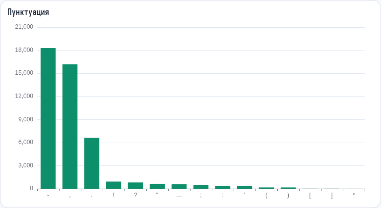
Анализ частот пунктуации по главам помогает обнаружить диалоги, паузы и изменение стиля повествования.
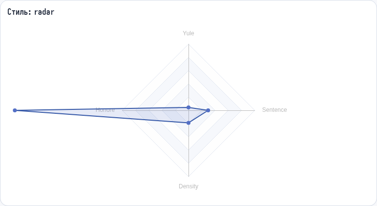
Радар‑диаграмма показывает сжатые метрики по главам/секциям (лексическая плотность, длинна предложений и пр.).
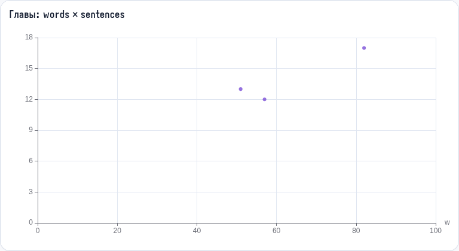
Scatter plot: соотношение слов и предложений в главах — помогает находить аномально длинные/короткие главы.
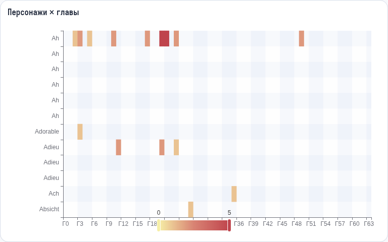
Тепловая карта появления персонажей по главам — удобно для отслеживания арок и смен фокуса на персонажей.
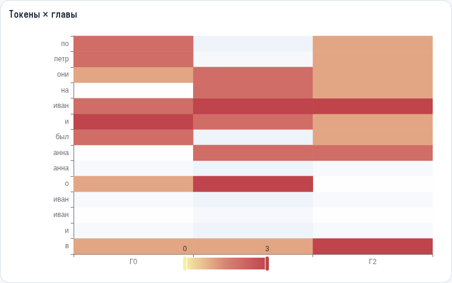
Тепловая карта распределения частот ключевых токенов по главам — полезно для тематического картирования.
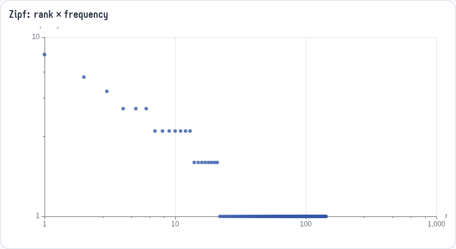
Граф ранга и частоты токенов (закон Ципфа). Проверка ожидаемого распределения и качества токенизации.
Мы показали рабочий конвейер: от текста до визуализаций и статической витрины. Артефакты хранятся в outputs/<book_id>/ и экспортируются в site/public/data/.
Дальше: улучшение NER, валидация персонажей, сравнение разных изданий и масштабирование на корпус.
Вопросы и предложения — обсуждаем. Доп. материалы и код — в репозитории.